SECCIÓN 9S
EXTREMO TRASERO DE LA CARROCERÍA
Precaución: Desconecte el cable negativo de la batería antes de quitar o instalar cualquier equipo eléctrico o siempre que algún equipo o herramienta pueda entrar en contacto con las terminales eléctricas expuestas. Al desconectar este cable, ayudará a evitar lesiones personales y daños al vehículo. El encendido también debe estar en la posición LOCK (bloqueado), a menos que se indique lo contrario.
ESPECIFICACIONES
Especificaciones de apriete
Aplicación | N•m | Lb-Ft | Lb-pulgada |
Tornillos de la compuerta de llenado de combustible | 2 | - | 18 |
Espárragos del conjunto de soporte por gas | 8 | - | 71 |
Pernos de bisagra de la compuerta trasera | 20 | 15 | - |
Tornillos de bloqueo de la compuerta trasera | 6 | - | 53 |
Tornillos del cebador de bloqueo de la compuerta trasera | 20 | 15 | - |
Tuercas del cilindro de cierre del compartimento de equipajes | 3 | - | 27 |
Tornillos del cierre del compartimento de equipajes | 6 | - | 53 |
Pernos del cebador de cierre del compartimento de equipajes | 8 | - | 71 |
Pernos de la tapa de la cubierta trasera | 10 | - | 89 |
Perno del cable y manilla remota | 8 | - | 71 |
MANTENIMIENTO Y REPARACIÓN
Servicio en el vehículo
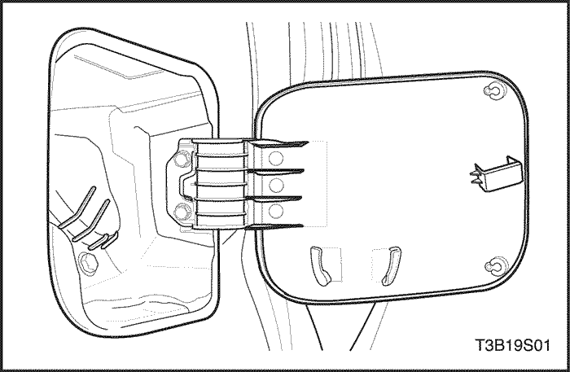


Compuerta de llenado de combustible
Procedimiento de desmontaje
- Quite los tornillos y la compuerta de llenado de combustible.
Procedimiento de Instalación
- Instale la compuerta de llenado de combustible con los tornillos.
Apretar
Apriete los tornillos de la compuerta de llenado de combustible a 2 N•m (18 lb-in).
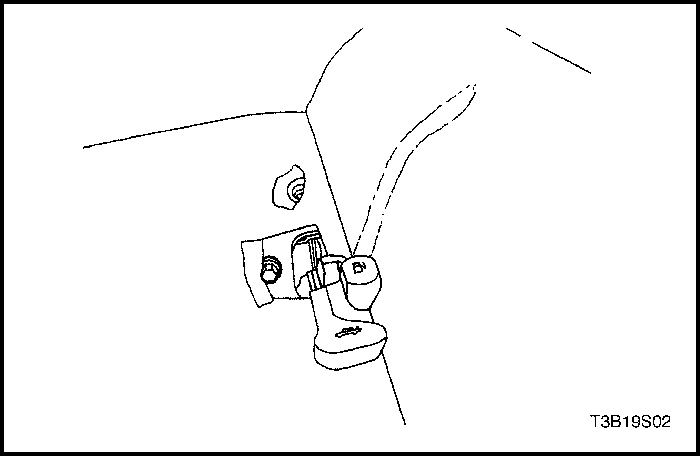
Cable y manilla remota de compuerta de llenado de combustible
Procedimiento de desmontaje
- Abra el compartimento de equipajes.
- Retire el panel de tapizado del alojamiento de rueda del compartimento de equipajes izquierdo, ambos paneles de tapizado del cuarto trasero del compartimento de equipajes, y el panel de tapizado trasero del compartimento de equipajes. Consulte la Sección 9G, Acabado Interior.
- Desconecte el cable de la compuerta de llenado de combustible.
- Retire los asientos delantero del conductor y el trasero. Consulte Sección 9H, Asientos.
- Vuelva a colocar la alfombra de suelo en el lado izquierdo del vehículo.
- Retire el perno y la manilla.
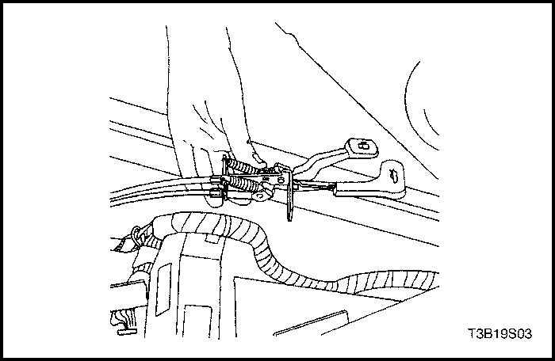
- Desconecte el cable de la manilla.
- Quite el cable.
Procedimiento de Instalación
- Pase el cable desde el compartimento de equipajes al compartimento de pasajeros.
- Conecte el cable a la manilla.
- Instale la manilla con el perno.
Apretar
Apriete el perno de la manilla del cable remoto a 8 N•m (71 lb-in).
- Instale la alfombra del suelo en su posición original.
- Instale los asientos delantero y trasero. Consulte Sección 9H, Asientos.
- Conecte el cable a la compuerta de llenado de combustible.
- Instale el panel de tapizado del alojamiento de rueda del compartimento de equipajes izquierdo, ambos paneles de tapizado del cuarto trasero del compartimento de equipajes, y el panel de tapizado trasero del compartimento de equipajes. Consulte la Sección 9G, Acabado Interior.
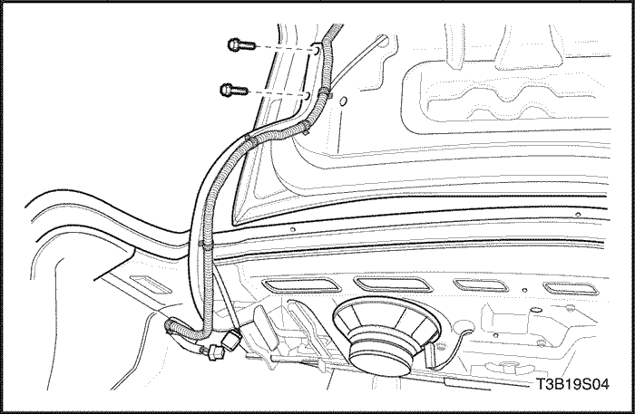
Tapa de la cubierta trasera (carrocería de tres cuerpos)
Procedimiento de desmontaje
- Desconecte el cable negativo de la batería.
- Desenchufe el conector eléctrico.
- Desconecte el cable de conexión del brazo abatible de la tapa de la cubierta trasera.
- Quite los pernos y la tapa de la cubierta trasera.
Procedimiento de Instalación
- Instale la tapa de la cubierta trasera con los pernos.
Apretar
Apriete los pernos de la tapa de la cubierta trasera a 10 N•m (89 Lb-pulgada).
- Conecte el cable de conexión al brazo abatible de la tapa de la cubierta trasera.
- Enchufe el conector eléctrico.
- Conecte el cable negativo de la batería.
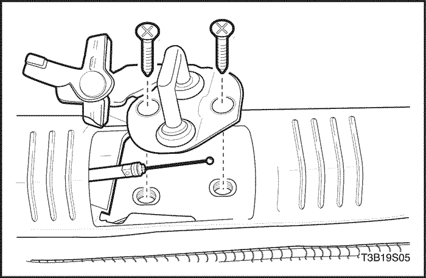
Cable y manilla remota de tapa de la cubierta trasera
Procedimiento de desmontaje
- Abra el compartimento de equipajes.
- Quite el alojamiento de rueda del lado izquierdo del compartimento de equipaje, el cuarto trasero y los paneles de tapizado trasero. Consulte la Sección 9G, Acabado Interior.
- Retire el cebador de cierre. Consulte "Cebador de cierre del compartimento de equipajes (Notchback)" en esta sección.
- Desconecte el cable del cebador de cierre.
- Retire los asientos delantero del conductor y el trasero. Consulte Sección 9H, Asientos.
- Vuelva a colocar la alfombra de suelo en el lado izquierdo del vehículo.
- Retire el perno y la manilla.
- Desconecte el cable de la manilla.
- Quite el cable.
Procedimiento de Instalación
- Pase el cable desde el compartimento de equipajes al compartimento de pasajeros.
- Conecte el cable a la manilla.
- Instale la manilla con el perno.
Apretar
Apriete el perno de la manilla del cable remoto a 8 N•m (71 lb-in).
- Instale la alfombra del suelo en su posición original.
- Instale los asientos delantero y trasero. Consulte Sección 9H, Asientos.
- Conecte el cable al cebador de cierre.
- Instale el cebador de cierre. Consulte "Cebador de cierre del compartimento de equipajes (Notchback)" en esta sección.
- Instale el alojamiento de rueda del lado izquierdo del compartimento de equipaje, el cuarto trasero y los paneles de tapizado trasero. Consulte la Sección 9G, Acabado Interior.
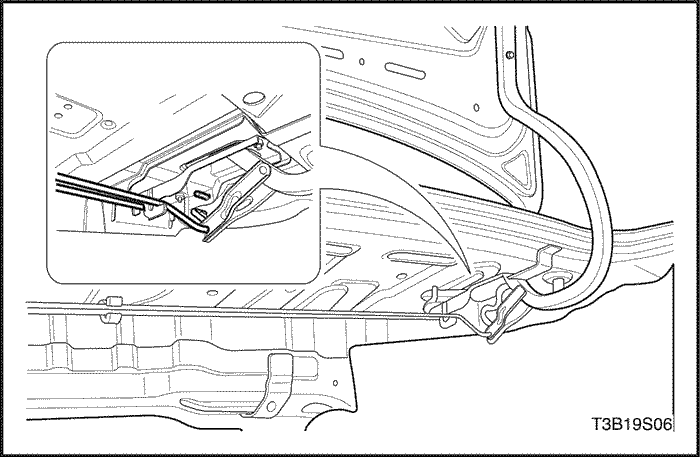
Varilla de apriete
Procedimiento de desmontaje
- Quite la varilla de apriete del brazo de la bisagra de la tapa de la cubierta trasera.
- Quite la varilla de apriete de las bisagras.
Procedimiento de Instalación
- Instale la varilla de apriete en las bisagras.
- Instale la varilla de apriete en el brazo de la bisagra de tapa de la cubierta trasera.
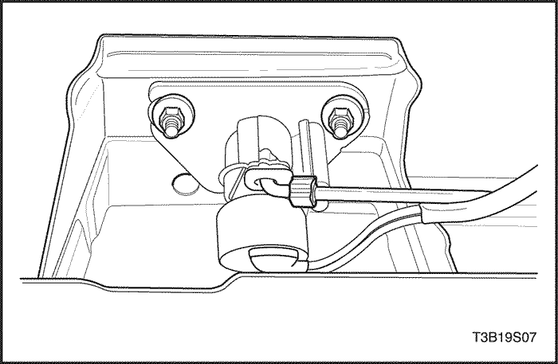
Cilindro de cierre del compartimento de equipajes
Procedimiento de desmontaje
- Retire la moldura decorativa inferior de la compuerta trasera (si dispone de ella). Consulte Sección 9G, Tapizado interior.
- Desconecte la varilla de bloqueo.
- Retire las tuercas y el cilindro de cierre.
Procedimiento de Instalación
- Instale el cilindro de cierre con las tuercas.
Apretar
Apriete las tuercas del cilindro de cierre del compartimento de equipajes a 3 N•m (27 lb-in).
- Conecte la varilla de bloqueo.
- Instale la moldura decorativa inferior de la compuerta trasera (si dispone de ella). Consulte Sección 9G, Tapizado interior.
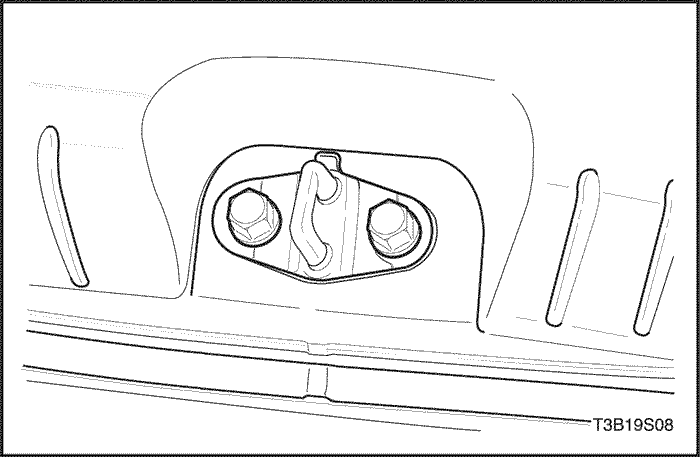
Cebador de cierre del compartimento de equipajes (Notchback)
Procedimiento de desmontaje
- Abra el compartimento de equipajes.
- Quite el panel de tapizado posterior del compartimento de equipajes. Consulte la Sección 9G, Acabado Interior.
- Retire los pernos que aseguran el cebador de cierre.
- Extraiga el cebador de cierre.
Procedimiento de Instalación
- Instale el cebador de cierre con los pernos.
Apretar
Apriete los pernos del cebador de cierre del compartimento de equipajes a 8 N•m (71 Lb-pulgada).
- Instale el panel de tapizado trasero del compartimento de equipajes. Consulte la Sección 9G, Acabado Interior.
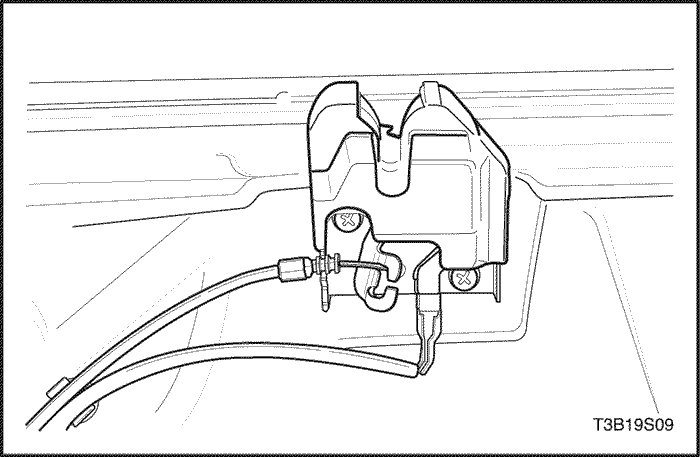
Cierre del compartimento de equipajes (Notchback)
Procedimiento de desmontaje
- Desconecte el cable negativo de la batería.
- Quite los tornillos y el cierre del compartimento de equipajes.
- Desenchufe el conector eléctrico.
- Desconecte la varilla de bloqueo.
- Desconecte el cable del cierre.
Procedimiento de Instalación
- Conecte el cable al cierre.
- Conecte la varilla de bloqueo.
- Enchufe el conector eléctrico.
- Instale el cierre del compartimento de equipajes con los tornillos.
Apretar
Apriete los tornillos del cierre del compartimento de equipajes a 6 N•m (53 Lb-pulgada).
- Conecte el cable negativo de la batería.
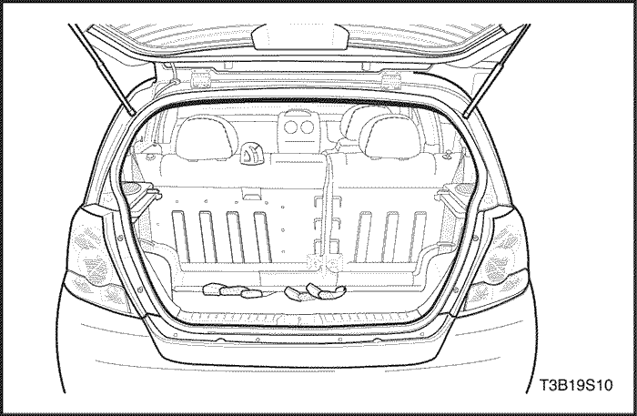
Burlete
Procedimiento de desmontaje
- Abra la tapa del compartimento de equipajes.
- Quite los paneles de tapizado posterior y del cuarto posterior del compartimento de equipajes. Consulte la Sección 9G, Acabado Interior.
- Quite el burlete de alrededor del hueco.
Procedimiento de Instalación
- Instale el burlete sobre la brida del hueco.
- Inspeccione el burlete. Asegúrese de que el contraremache se encuentra totalmente asentado sobre la brida.
- Usando una manguera de agua sin boquilla, pruebe la tapa de cubierta trasera para asegurarse de que no existen fugas.
- Instale los paneles de tapizado posterior y del cuarto posterior del compartimento de equipajes. Consulte la Sección 9G, Acabado Interior.
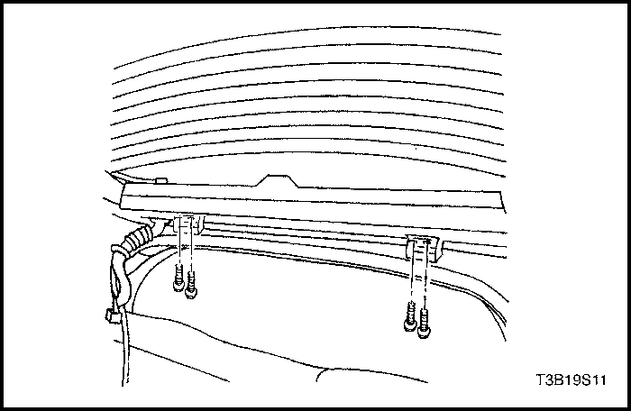
Compuerta trasera
Procedimiento de desmontaje
- Abra y apoye adecuadamente la compuerta trasera.
- Desconecte el pasacables de la compuerta trasera, el conector eléctrico y la manguera del sistema de lavado.
- Quite los conjuntos de soporte por gas de la compuerta trasera y de la carrocería. Consulte "Conjuntos de soporte por gas" en esta sección.
- Con la ayuda de otro técnico, quite los pernos y la compuerta trasera de las bisagras.
Procedimiento de Instalación
- Con la ayuda de otro técnico, instale la compuerta trasera en las bisagras con los pernos.
Apretar
Apriete los pernos de la bisagra de la compuerta trasera a 20 N•m (15 Lb-Ft).
- Instale los conjuntos de soporte por gas en la compuerta trasera y la carrocería. Consulte "Conjuntos de soporte por gas" en esta sección.
- Conecte el conector eléctrico de la compuerta trasera, la manguera del sistema de lavado y el pasacables.
- Cierre la puerta trasera.
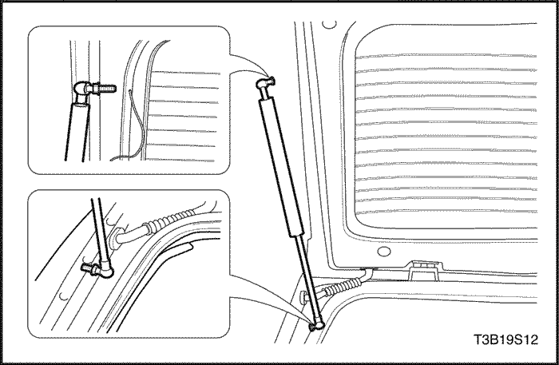
Conjuntos de soporte por gas
Procedimiento de desmontaje
- Abra y apoye adecuadamente la compuerta trasera.
- Desatornille y quite el conjunto de soporte por gas de la compuerta trasera y de la carrocería.
Procedimiento de Instalación
- Instale el conjunto de soporte por gas en la compuerta trasera y la carrocería.
Apretar
Apriete el espárrago del conjunto de soporte por gas a 8 N•m (71 Lb-pulgada).
- Cierre la puerta trasera.
Cebador de bloqueo de la compuerta trasera
Procedimiento de desmontaje
- Abra la puerta trasera.
- Quite el panel de tapizado posterior del compartimento de equipajes. Consulte la Sección 9G, Acabado Interior.
- Quite los tornillos que aseguran el cebador de cierre.
- Desconecte el cable del cebador de cierre.
Procedimiento de Instalación
- Conecte el cable al cebador de cierre.
- Instale el cebador de cierre con los tornillos.
Apretar
Apriete los tornillos del cebador de cierre de la compuerta trasera a 20 N•m (15 Lb-Ft).
- Instale el panel de tapizado trasero del compartimento de equipajes. Consulte la Sección 9G, Acabado Interior.
- Cierre la puerta trasera.
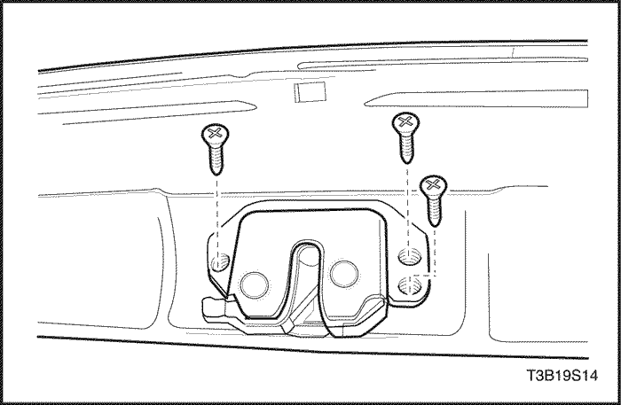
Cierre de la compuerta trasera
Procedimiento de desmontaje
- Abra la puerta trasera.
- Retire la moldura decorativa inferior de la puerta hatchback. Consulte la Sección 9G, Acabado Interior.
- Quite los tornillos y la cerradura de la compuerta trasera.
- Desconecte las varillas de bloqueo y el conector eléctrico.
Procedimiento de Instalación
- Conecte las varillas de bloqueo y el conector eléctrico.
- Instale la cerradura de la compuerta trasera con los tornillos.
Apretar
Apriete los tornillos de la cerradura de la compuerta trasera a 6 N•m (53 Lb-pulgada).
- Coloque la moldura decorativa inferior de la puerta hatchback. Consulte la Sección 9G, Acabado Interior.
- Cierre la puerta trasera.
DESCRIPCIÓN GENERAL Y FUNCIONAMIENTO DEL SISTEMA
Compuerta de llenado de combustible
La compuerta de llenado de combustible se fija al alojamiento del depósito de combustible en el lado derecho del vehículo.
Tapa de la cubierta trasera (carrocería de tres cuerpos)
La tapa de la cubierta trasera consta de un panel interior y exterior colocado en el perímetro y pegada usando adhesivo estructural. Las varillas de torsión ayudan a abrir la tapa de la cubierta trasera y mantenerla en la posición de abierta.
Compuerta trasera
La compuerta trasera consta del cristal de la compuerta trasera dentro de un bastidor de acero. El bastidor de acero está compuesto de un panel exterior e interior plegados alrededor del perímetro y unidos mediante adhesivo estructural. El conjunto de soporte por gas ayuda a abrir la compuerta trasera y puede mantener la puerta abierta.